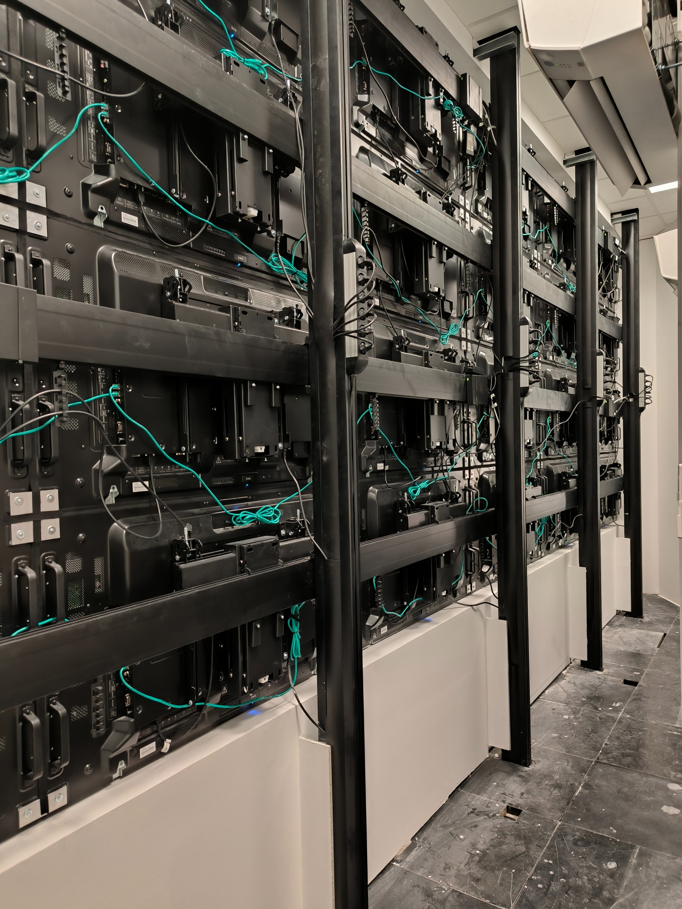
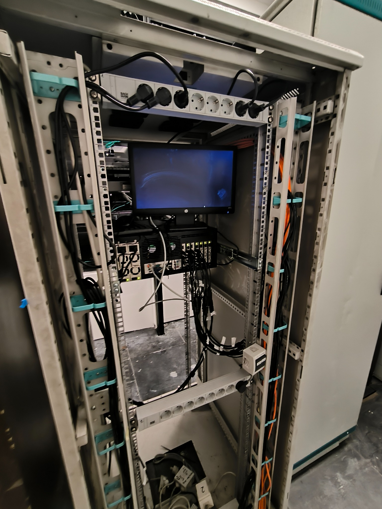

Video wall systems
Centralised content display, designed for continuous operation and a clear overview.


Integrated solutions for control and operations centres that bring display, monitoring and content management together in a stable, clearly organised working environment.
Control and operations centres need technology infrastructure that provides a clear overview of information, reliable system operation and an efficient real-time response. TR Services designs control room solutions as a combination of display technologies, network and AV infrastructure and the operator working environment, with a focus on clarity, stability and simple management.
Centralised content display, designed for continuous operation and a clear overview.
Platforms for distributing and managing signals over the network infrastructure.
Connecting different content sources and operational displays into a single system.
Workstations organised for clear, efficient and long working shifts.
A system foundation built for continuous, uninterrupted operation.
In spaces like these, technology has to support operators' daily work without unnecessary complexity. The solution is designed to display critical information clearly, distribute content simply and keep the workspace well organised, while meeting the requirements for system reliability and availability.

Video walls and operator positions only reach their full value when they are properly connected to the network infrastructure, content sources and control logic. That is why we see a control room as an integrated whole, in which display, signal distribution, content management and operator ergonomics all work together.

In control centres, system reliability is not an added value, it is a basic requirement. Our approach means designing infrastructure that is ready for long-term operation, straightforward maintenance and future expansion, so the system stays functional and adaptable to different operational scenarios.

Contact us for a consultation and a control room proposal tailored to your space, the way you work and the level of operational control your team needs.
Contact us